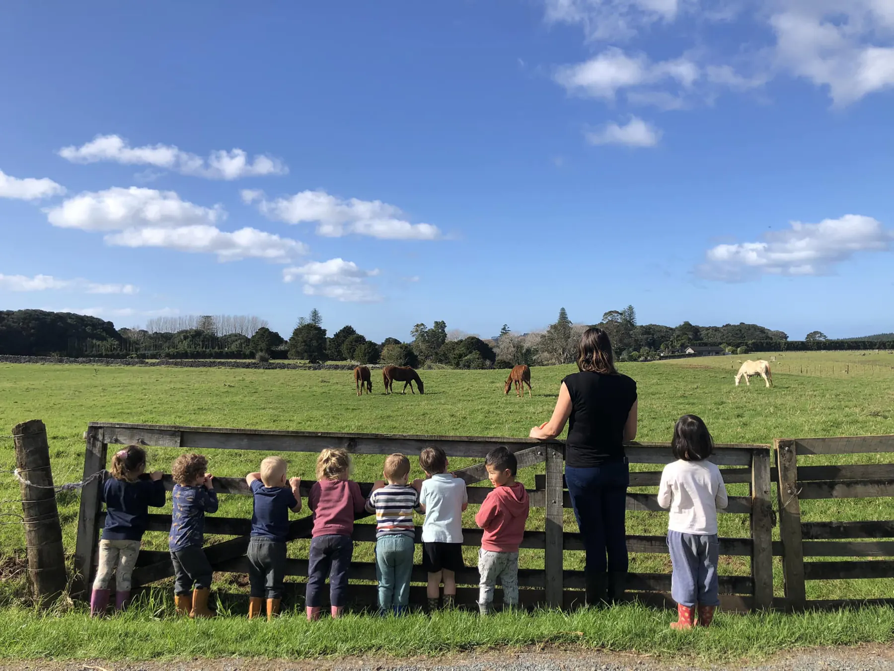
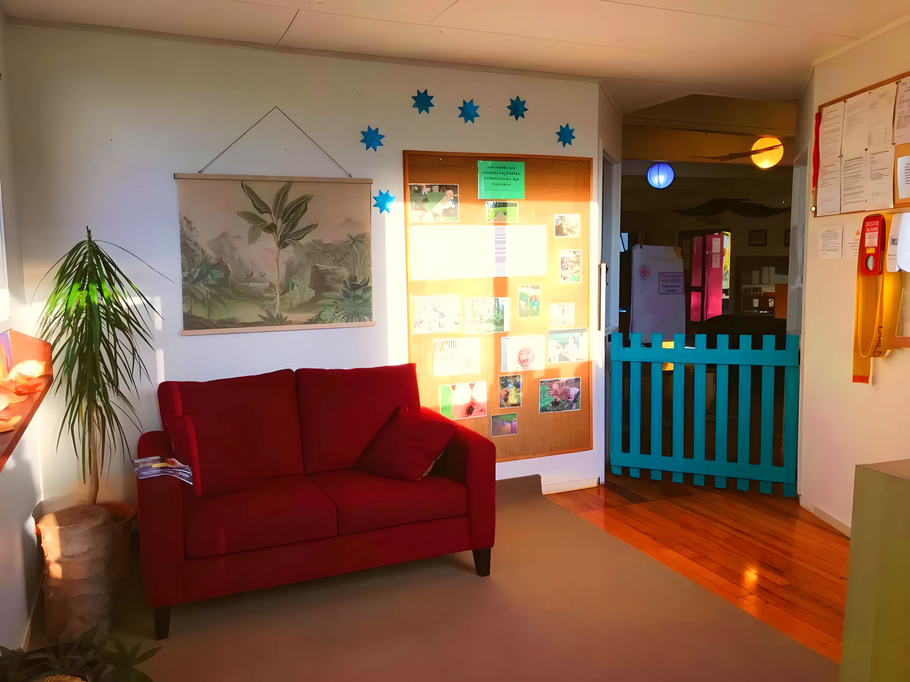

Home / Our program
Our program

Watching the horses at the paddock fence
At Open Spaces the natural environment is our 'third teacher' and the framework for play and learning. Nature gives the best provocations for physical, emotional, social and cognitive learning. This is education the way it used to be, and the way it should be.
What our program includes
01The Wild WoodsWeekly trips into native bush with up to 8 children and 2 kaiako
We're blessed with many acres of native bush, and our tamariki have weekly access to it. This 'outside classroom' is central to their learning and the 'engine room' for experiences we develop further back at the centre.
- Every week, a small group of up to 8 children and 2 kaiako (1:4)
- A paddock with stands of native bush and a track down to the creek
- Puriri trees over 400 years old, trees to climb, huts to build
- Older children occasionally feed the Tuna (eels) in the Waitangi stream
- Under 2s often come along on the walks too

02Teina space, Under 2sThe Pikler/RIE approach and primary caregiving
We base our practice with infants and toddlers on the Pikler/RIE approach, the ideas of Dr Emmi Pikler and Magda Gerber: all children are free and equal human beings.
We practise primary caregiving. When a child starts settling with us, they're given a primary care teacher who looks after daily communication with the family, the child's wellbeing, learning and routines, and shares that knowledge with a secondary key teacher.

03Tuakana, Over 2sA mixed-age side where older and younger learn together
We're a mixed-age centre and actively encourage the mixing of age groups so Tuakana / Teina relationships can flourish. We value interdependence over independence.
Through free play and intentional teaching, tamariki learn both on their own and alongside their peers and teachers.

04PurerehuaOur transition to school group
In Purerehua, tamariki spend time each day pursuing learning goals that draw together dispositions, skills and knowledge from across the curriculum, ready for the move to school.

05How we teachAn emergent curriculum guided by Te Whāriki
We follow an emergent curriculum that responds to the interests of our children, and use the 'project approach' to deepen and expand learning. Te Whāriki, the New Zealand early childhood curriculum, guides and inspires everything we do as teachers.
- 'Children are their own best risk managers', as promoted by Claire Warden of Mindstretchers in Scotland
- Learning dispositions: curiosity, imagination, creativity and perseverance
- The principles of Te Tiriti o Waitangi and an environment that values Te Ao Māori
- Family perspectives and expertise brought into the curriculum

06Kai from our kitchenCooked at the centre by Lola, our Kitchen Manager
Maria 'Lola' Webb has been with us since 2017. She started as a reliever and now runs the kitchen, cooking for the little ones. She holds a certificate in Basic Food and Safety.
On the Under Two side
The main ideas that shape our teaching with infants and toddlers in the Teina space.

Respect
Each child is accepted as an individual with the right to make their own choices, and treated as competent and capable.
Freedom of movement
Each child develops at their own pace. The quality of each movement, rolling, crawling, sitting, walking, matters more than how fast they get to the next one.
Relationships
Secure, trusting and responsive relationships, starting with a primary care teacher for every child.
Free play
Play is how children learn. Our resources are open-ended, so they can be used in many ways and stretch imagination and creativity.
Why nature
In nature, children get to use all their senses. They experience peace, solitude, beauty and wonder.
Thinking about a place?
Please email us for our current wait times for enrolment and our fee schedule. You're welcome to call too.